Exploration des données
Nos premières requêtes SQL pour découvrir les clients, les produits et les fournisseurs de KDou.
Sujet de la SAE sur laquelle nous avons travaillé :
SAE2026Notre démarche
Pour cette première partie, nous avons réalisé les questions a à j avec Microsoft Access. Les requêtes permettent de filtrer, trier et relier les informations des différentes tables. Nous présentons les méthodes de Marc et de Maxim ainsi que les captures disponibles dans leurs rapports.
Accéder directement à une question
- a - Clients situés à Paris
- b - Produits américains à moins de 25 €
- c - Viandes et poissons à plus de 50 €
- d - Fournisseurs de viande ou de poisson
- e - Fournisseurs de viande ET de poisson
- f - Conditionnements en carton ou en verre
- g - Trois dernières commandes de Max Deschamps
- h - Fournisseurs proposant uniquement des desserts
- i - Fournisseurs étrangers sans produit
- j - Clients partenaires situés à Paris
a - Les clients situés à Paris
Objectif
Retrouver les clients qui habitent à Paris et les classer par ordre alphabétique selon le nom de leur société.
Requête SQL
SELECT *
FROM Clientele
WHERE Clientele.Ville = "Paris"
ORDER BY Clientele.Societe ASC;Résultat obtenu
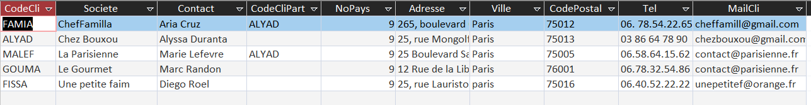
Le filtre WHERE conserve uniquement les clients de Paris. Maxim a également signalé dans son rapport une incohérence entre la ville et le code postal d'un client : c'est une information à vérifier dans la base.
b - Les produits américains à moins de 25 €
Objectif
Afficher les produits provenant des États-Unis dont le coût d'achat est inférieur à 25 €, avec leur fournisseur et la ville de celui-ci.
Requête SQL
SELECT
Fournisseur.Societe,
Pays.PaysFR,
Produit.CoutAchat,
Produit.NomProd,
Fournisseur.Ville
FROM
Pays
INNER JOIN (
Fournisseur
INNER JOIN Produit
ON Fournisseur.NoFour = Produit.NoFour
) ON Pays.NoPays = Fournisseur.NoPays
WHERE
Pays.PaysFR = "Etats-Unis"
AND Produit.CoutAchat < 25;Résultat obtenu
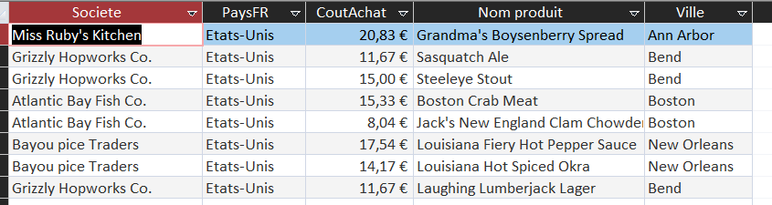
Nous avons relié les tables Produit, Fournisseur et Pays. La condition sur le pays et le prix permet de conserver uniquement les articles recherchés.
Méthode de Killian
Killian a utilisé DISTINCT, une jointure entre Produit, Fournisseur et Pays, puis un filtre sur le coût et le pays.
SELECT DISTINCT P.NomProd, P.CoutAchat, F.Societe, F.Ville
FROM (Produit AS P INNER JOIN Fournisseur AS F ON P.NoFour = F.NoFour)
INNER JOIN Pays ON Pays.NoPays = F.NoPays
WHERE (P.CoutAchat < 25 AND Pays.PaysFR = "Etats-Unis")
ORDER BY P.NomProd;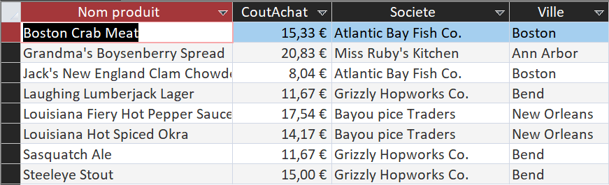
Son tableau contient huit produits et est trié par nom de produit.
c - Les viandes et poissons à plus de 50 €
Objectif
Retrouver les produits des catégories Viandes ou Poissons et fruits de mer dont le coût d'achat dépasse 50 €, avec leur fournisseur et leur pays d'origine.
Requête SQL
SELECT
Produit.NomProd,
Fournisseur.Societe,
Pays.PaysFR,
Produit.CoutAchat
FROM
((Produit
INNER JOIN Fournisseur
ON Produit.NoFour = Fournisseur.NoFour)
INNER JOIN Categorie
ON Produit.CodeCateg = Categorie.CodeCateg)
INNER JOIN Pays
ON Fournisseur.NoPays = Pays.NoPays
WHERE
(Categorie.NomCateg LIKE "*viande*"
OR Categorie.NomCateg LIKE "*poisson*")
AND Produit.CoutAchat > 50;Résultat obtenu
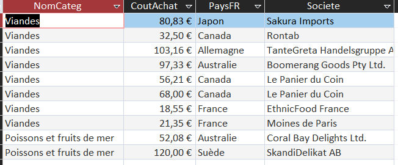
La version SQL affichée ici est celle de Maxim. Les parenthèses autour des deux catégories permettent d'appliquer le prix supérieur à 50 € aux viandes et aux poissons. C'est une difficulté qu'il explique dans son rapport.
Méthode de Killian
Killian a relié Produit, Fournisseur, Pays et Categorie. Il applique le seuil de 50 € aux produits appartenant aux catégories viandes ou poissons.
SELECT DISTINCT
P.NomProd,
F.Societe,
Pays.PaysFR,
P.CoutAchat
FROM
((Produit AS P
INNER JOIN Fournisseur AS F ON P.NoFour = F.NoFour)
INNER JOIN Pays ON F.NoPays = Pays.NoPays)
INNER JOIN Categorie AS C ON P.CodeCateg = C.CodeCateg
WHERE
(C.NomCateg LIKE "*Viande*" OR C.NomCateg LIKE "*Poisson*")
AND P.CoutAchat > 50
ORDER BY P.NomProd;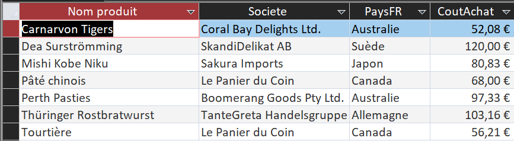
d - Les fournisseurs de viande ou de poisson
Objectif
Obtenir une liste des fournisseurs qui proposent au moins un produit de la catégorie Viandes ou Poissons et fruits de mer.
Requête SQL
SELECT DISTINCT
Fournisseur.Societe
FROM
(Fournisseur
INNER JOIN Produit
ON Fournisseur.NoFour = Produit.NoFour)
INNER JOIN Categorie
ON Produit.CodeCateg = Categorie.CodeCateg
WHERE
Categorie.NomCateg LIKE "*viande*"
OR Categorie.NomCateg LIKE "*poisson*"
ORDER BY
Fournisseur.Societe;Résultat obtenu
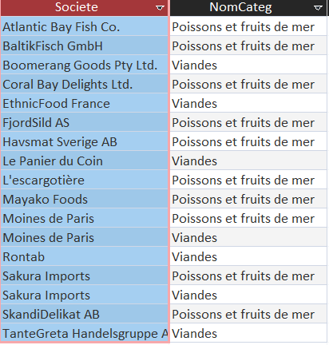
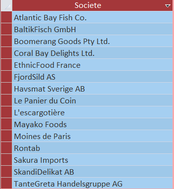
DISTINCT évite d'afficher plusieurs fois la même société lorsqu'elle propose plusieurs produits. Ici, une seule des deux catégories suffit pour apparaître dans le résultat.
e - Les fournisseurs de viande et de poisson
Objectif
Cette fois, il faut trouver les fournisseurs qui proposent à la fois au moins un produit de catégorie 6 (Viandes) et un produit de catégorie 8 (Poissons et fruits de mer).
Notre démarche
Marc a commencé par séparer les produits des deux catégories. Il a ensuite recherché les fournisseurs présents dans les deux listes.
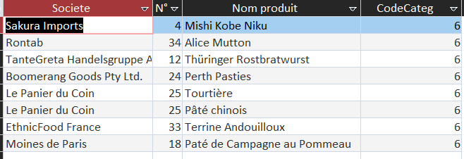
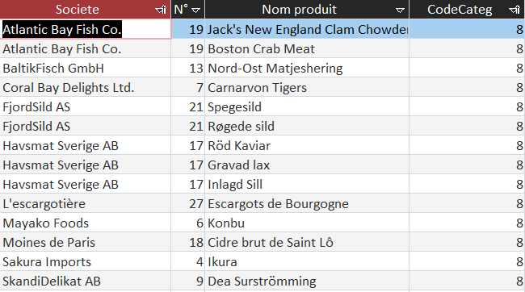
Requête SQL finale
SELECT Fournisseur.Societe
FROM Fournisseur
WHERE Fournisseur.NoFour IN (
SELECT Produit.NoFour
FROM Produit
WHERE Produit.CodeCateg = 6
)
AND Fournisseur.NoFour IN (
SELECT Produit.NoFour
FROM Produit
WHERE Produit.CodeCateg = 8
);Résultat obtenu
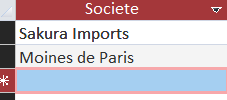
2 fournisseurs communs
Maxim a obtenu les mêmes sociétés avec une sous-requête différente. Dans son deuxième rapport, il montre notamment une correction de l'opérateur LIKE : sur leur configuration d'Access, il fallait utiliser l'astérisque * et non %.
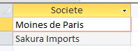
Méthode de Killian
Comme Marc, Killian a retenu deux sous-requêtes avec IN : une pour la catégorie 6 (viandes) et une pour la catégorie 8 (poissons).
SELECT F.Societe
FROM Fournisseur AS F
WHERE F.NoFour IN (
SELECT P.NoFour
FROM Produit AS P
WHERE P.CodeCateg = 6
)
AND F.NoFour IN (
SELECT P.NoFour
FROM Produit AS P
WHERE P.CodeCateg = 8
);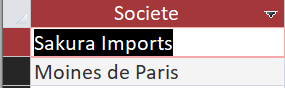
Le résultat confirme Sakura Imports et Moines de Paris.
f - Les produits conditionnés en carton ou en verre
Objectif
Repérer les produits dont la description du conditionnement contient les mots « carton » ou « verre ».
Requête SQL
SELECT
Produit.NomProd,
Produit.QteParUnit
FROM Produit
WHERE
Produit.QteParUnit LIKE "*carton*"
OR Produit.QteParUnit LIKE "*verre*";Résultat obtenu
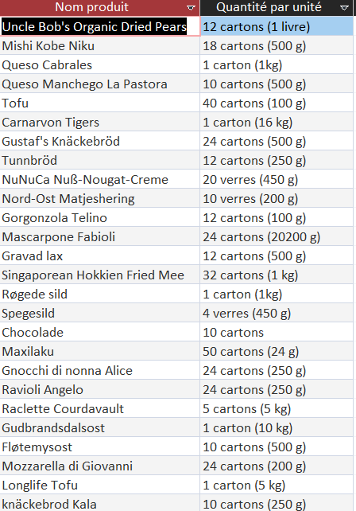
Le caractère * utilisé avec LIKE permet de rechercher un mot au milieu d'un texte plus long, comme « 12 cartons (500 g) ».
g - Les trois dernières commandes de Max Deschamps
Objectif
Retrouver trois commandes associées au contact Max Deschamps, en commençant par les plus récentes.
Requête SQL de Marc
SELECT TOP 3
Clientele.Contact,
Commande.dateEnv,
Commande.[N° commande]
FROM
Clientele
INNER JOIN Commande
ON Clientele.CodeCli = Commande.CodeCli
WHERE
Clientele.Contact = "Max Deschamps"
ORDER BY
Commande.dateEnv DESC;Résultat obtenu
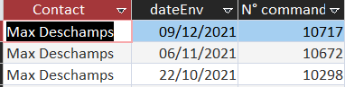
Marc utilise TOP 3 et trie par date d'envoi (dateEnv). Dans son rapport, Maxim utilise plutôt la date de commande (DateCde). Ce n'est pas exactement le même classement : pour rechercher les dernières commandes passées, la date de commande est la plus adaptée.
h - Les fournisseurs proposant uniquement des desserts
Objectif
Retrouver les fournisseurs qui proposent au moins un dessert, mais aucun produit d'une autre catégorie.
Requête SQL de Maxim
SELECT DISTINCT
Fournisseur.Societe
FROM
(Fournisseur
INNER JOIN Produit
ON Fournisseur.NoFour = Produit.NoFour)
INNER JOIN Categorie
ON Produit.CodeCateg = Categorie.CodeCateg
WHERE
Categorie.NomCateg LIKE "*Dessert*"
AND Fournisseur.NoFour NOT IN (
SELECT F.NoFour
FROM
(Fournisseur AS F
INNER JOIN Produit AS P
ON F.NoFour = P.NoFour)
INNER JOIN Categorie AS C
ON P.CodeCateg = C.CodeCateg
WHERE C.NomCateg NOT LIKE "*Dessert*"
);Difficulté rencontrée
Maxim explique qu'il ne suffit pas de chercher des fournisseurs qui vendent des desserts : il faut aussi exclure ceux qui proposent d'autres catégories. Il a utilisé NOT IN pour retirer ces fournisseurs.
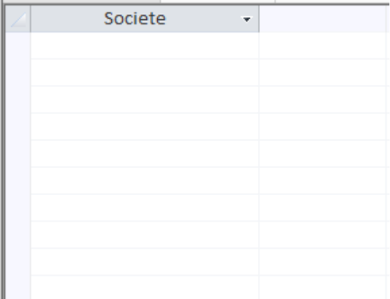
Le résultat final n'est pas illustré par une capture dans les rapports fournis. Nous ne donnons donc pas de nombre de fournisseurs non vérifié.
i - Les fournisseurs étrangers sans produit au catalogue
Objectif
Identifier les fournisseurs situés hors de France qui n'ont actuellement aucun produit associé dans la base KDou.
Notre démarche
On effectue un LEFT JOIN entre Fournisseur et Produit. Les fournisseurs sans produit sont retrouvés avec IS NULL. On exclut ensuite la France.
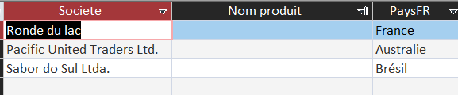
Requête SQL finale
SELECT
Fournisseur.Societe,
Pays.PaysFR
FROM
(Fournisseur
LEFT JOIN Produit
ON Fournisseur.NoFour = Produit.NoFour)
INNER JOIN Pays
ON Fournisseur.NoPays = Pays.NoPays
WHERE
Pays.PaysFR <> "France"
AND Produit.RefProd IS NULL
ORDER BY
Fournisseur.Societe;Résultat obtenu
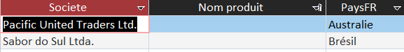
2 fournisseurs étrangers sans produit
La requête SQL présentée ici est la version plus courte de Maxim. Elle permet de retrouver les mêmes fournisseurs que la méthode de Marc.
j - Les couples de clients partenaires à Paris
Objectif
Retrouver les clients situés à Paris qui sont rattachés à un autre client par le champ CodeCliPart.
Notre démarche
On utilise deux fois la table Clientele grâce à un alias Clientele_1. La jointure associe le CodeCliPart d'un client au CodeCli de son partenaire.
Requête SQL
SELECT
Clientele.Contact,
Clientele.Ville,
Clientele.CodeCliPart,
Clientele.CodeCli,
Clientele_1.Contact,
Clientele_1.Ville,
Clientele_1.CodeCliPart,
Clientele_1.CodeCli
FROM
Clientele
INNER JOIN Clientele AS Clientele_1
ON Clientele.CodeCliPart = Clientele_1.CodeCli
WHERE
Clientele.Ville = "Paris";Résultat obtenu
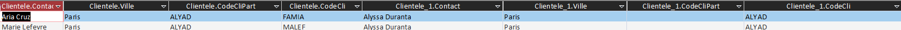
Marc a trouvé deux correspondances : Aria Cruz et Alyssa Duranta, puis Marie Lefevre et Alyssa Duranta. Les deux premiers clients sont associés au code partenaire ALYAD.
Conclusion
Cette exploration nous a permis de mieux comprendre les informations contenues dans la base KDou. Nous avons utilisé les filtres WHERE, les jointures, les sous-requêtes et les tris ORDER BY. Certaines questions demandaient aussi de faire attention aux différences entre OR et AND ou d'utiliser plusieurs étapes pour vérifier les résultats.
Après cette première exploration, nous avons pu passer à des indicateurs plus complets dans la page Analyse.
Nos rapports individuels
Les explications détaillées et les autres essais se trouvent dans les rapports du groupe.